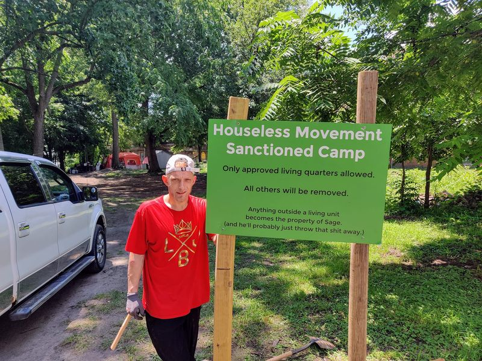

Mobile uploads
I can't thank @[100002772477566:2048:Harry Patterson Jr.] enough. He has been working really hard at finding Andrew's family. (Andrew passed away a little over a week ago in his tiny house at the Church of the Nomadic Spirit Tent Community)
He is putting together a memorial gathering.
I'm not going to share any details that he has shared with me. (Maybe you could let people know, Harry, what is appropriate to share.)
My heart is so lightened by the hope that we can share memories of Andrew's life as a community.
Andrew was deeply loved by his friends.
(Andrew and I put up that sign. He never liked the word "Sanctioned". He said it sounded like prison. So that sign didn't last long.)